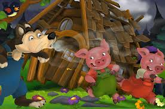
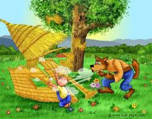

After some time, a wolf passed the lane of these pigs’ houses. He saw the house made up of straws and a pig playing nearby. The wolf decided to him. The moment the pig saw the wolf, he ran inside the house in fear. Then, the wolf knocked on the door and said, “Little pig! Little pig! Won’t you let me in?” But, the pig refused and replied, “No! No! No! Not by the hair on my chinny chin chin!” Then the wolf grinned and said, “Then I’ll huff, and I’ll puff, and I’ll blow your house in.” He did what he said, and he blew the house away. Seeing this, the first pig ran towards the second pig’s house to hide. The wolf followed him along and found the second pig’s house. He knocked on the door again and said, “Little pigs! Little pigs! Won’t you let me in?” After seeing the scary teeth of the wolf, both the pigs replied, “No! No! No! Not by the hair on our chinny chin chin!” Then again, the wolf laughed in satire and said, “Then I’ll huff, and I’ll puff, and I’ll blow your house in.” And he did just that.
© 2023 Pigs Story Copyright All Rights Reserved
 